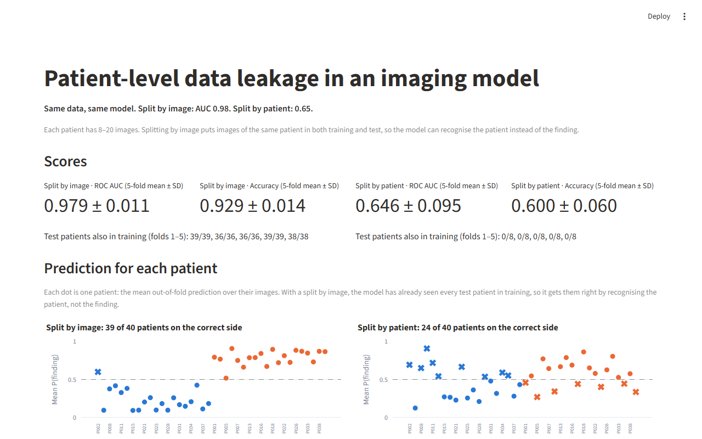
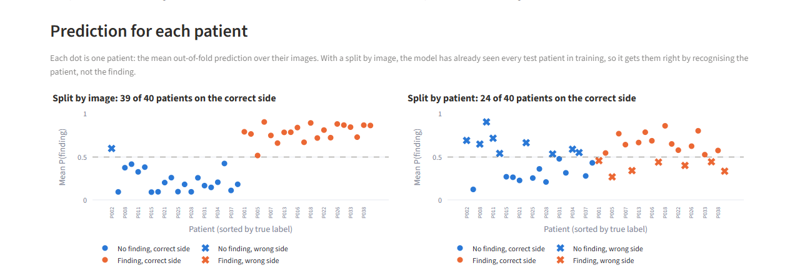
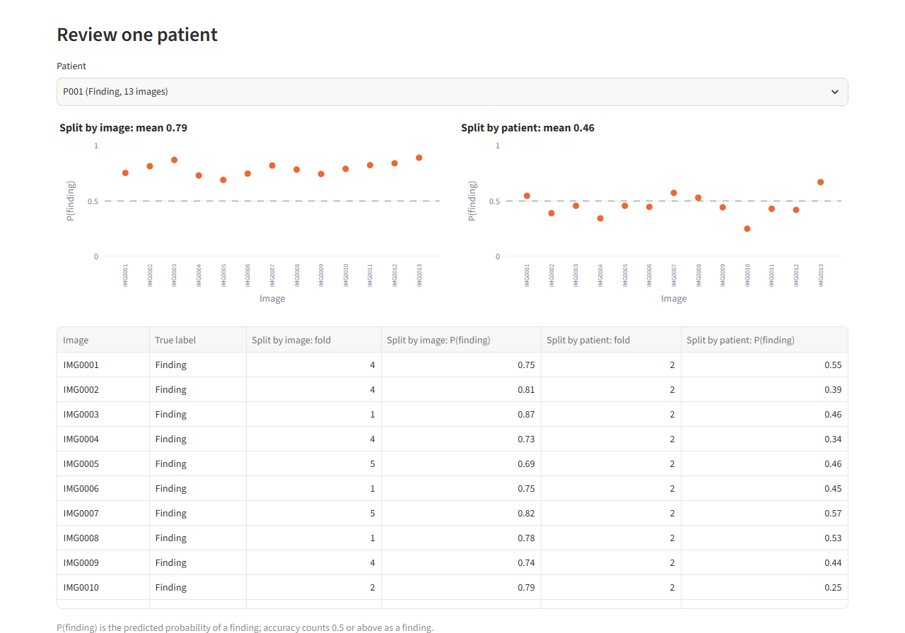

Patient-level data leakage in an imaging model
When one patient has several images, splitting the data by image puts the same patient in both training and test, and the model looks far better than it is. This demo shows the effect on fully synthetic data: the same data and the same model score AUC 0.98 with an image-level split and 0.65 with a patient-level split.
The live app runs on a free hosting service, so if nobody has used it for a while it may take a little time to start.



All data is randomly generated and fictional; the demo does not use any actual images.